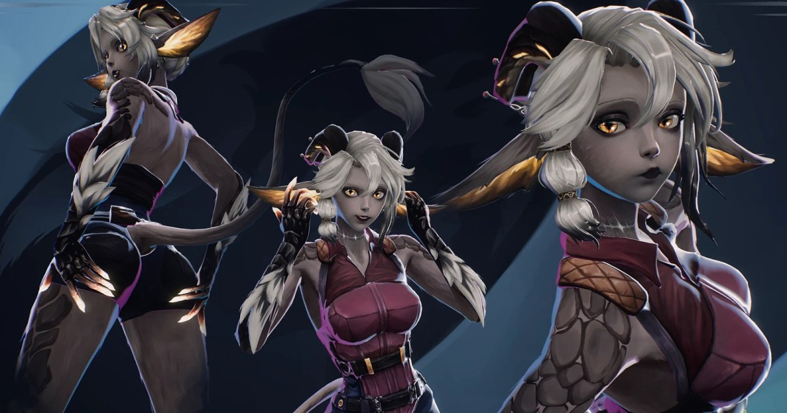

Chimera 角色製作：手繪毛皮、關節式臉部綁定與 ARKit 曲線事件
CataRackta 在 2026 年版 Chimera 中結合手繪貼圖與 Unreal Engine 5，使用關節和姿勢資產處理 ARKit 臉部曲線，並把情緒曲線門檻連到額外表情或握拳事件。

角色製作 ★★★☆☆
完整分析
貼圖流程：先烘焙體積再繪色
作者混合世界空間法線的色彩通道與環境遮蔽，整理出接近中性灰的底圖，再疊加顏色；毛皮另以漸層映射、遮罩和手繪髮絲增加變化，主要在模型表面或透過投影繪製。
製作控制：骨骼串接表情與事件
臉部變形採用關節式綁定與姿勢資產，而非傳統形狀鍵變形。作者能調整最終姿勢、排除特定關節或覆寫動畫層，並用 ARKit 曲線門檻觸發生悶氣表情或握拳等行為。
導入限制：相容性與追蹤硬體
作者曾遇到引擎與所需外掛的相容問題，最後購買 iPad 取得 ARKit 追蹤；Control Rig 環境互動與本機語言模型仍是後續規劃或研究，不能當作此版本已完成的功能。
BRIEF｜來源已驗證；證據深度較有限，完整分析會明確區分已知資訊與待驗證事項。